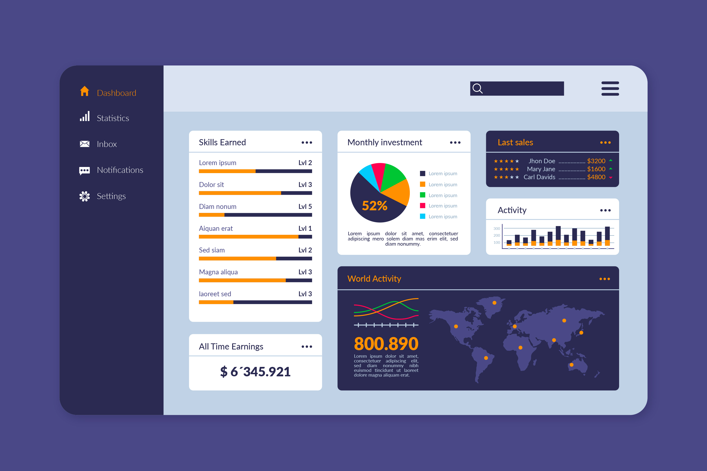

December 26, 2024
Data Cleaning & analysis on Layoffs Dataset
in SQL
Cleaned and standardized a layoffs dataset by removing duplicates,
fixing inconsistencies, and handling missing values. Transformed
date formats and identified trends across industries, countries,
and time periods. Conducted rolling totals to uncover key
company-specific, year-based layoff insights.
 December 31, 2024
December 31, 2024
Python Web Scraping on GitHub Topics
This project involves web scraping GitHub's topics page to extract
information about various topics and their top repositories. Using
Python libraries like `requests`, Beautiful Soup, and Pandas, it
fetches HTML content, parses details like topic titles,
descriptions, repository names, and star counts, and organizes the
data into CSV files.
December 26, 2024
Data Survey Analysis Dashboard - Power BI

Developed an interactive Power BI dashboard to analyze survey data
on data professionals, covering job roles, salaries, and job
satisfaction. Cleaned and optimized Excel data using Power Query
Editor.Visualized key metrics with bar charts, pie charts for
trend analysis and decision-making.
December 26, 2024
Data Cleaning & Creating Dashboard
in Excel

Analyzed a bike sales dataset in Excel, performing data cleaning,
handling missing values, and creating pivot tables for data
summarization. Designed an interactive dashboard and
visualizations, including charts, to track sales trends, identify
top performers, and calculate key metrics like total sales, growth
rates, and average sales. Provided actionable insights to optimize
sales strategies.
December 26, 2024
Wine Prediction Using ML
in Python

Built a wine quality prediction model using classification
algorithms, analyzing chemical parameters. Applied algorithms such
as Logistic Regression, Decision Trees, and Random Forest to
classify wine quality, optimizing model performance through
evaluation metrics like accuracy and precision.
December 26, 2024
Ticketing App Using
Next JS & Tailwind CSS
Developed a ticketing app using Next.js, Tailwind CSS, and
MongoDB, allowing users to create, update, and manage tickets
based on category, progress, status, and priority. Implemented
CRUD operations with MongoDB handling the database for efficient
ticket management